A small R package for visualizing linear models. Plots anything from simple lines to high-dimensional squiggles all with the same functions.
Start by fitting an lm(), then hand it to Applr. Explore it with autoplot(), or present it with polish and fine-grained control using geom_slice(). Either way, you can trust the linear model, because you can see it and control it - something geom_smooth() attempts, but can’t reach.
Also includes label helpers (geom_slice_subtitle(), geom_slice_text()), base-R plots (slice_2d()), interactive 3-D surfaces (scatter_3d()), LaTeX generator (lm_latex()), and a simple diagnostic helper (diagnose()).
Perfect for any Applied linear regression.
Installation
install.packages("devtools") # if you don’t have it
devtools::install_github("saundersg/Applr")
library(Applr)Quick start
library(Applr)
# One call: scatter + fitted line + label from any lm()
model <- lm(mpg ~ qsec + am, data = mtcars)
autoplot(model)
# Or build the plot yourself with a geom_slice() layer
library(ggplot2)
ggplot(mtcars, aes(qsec, mpg, color = am)) +
geom_point() +
geom_slice(model) +
geom_slice_subtitle()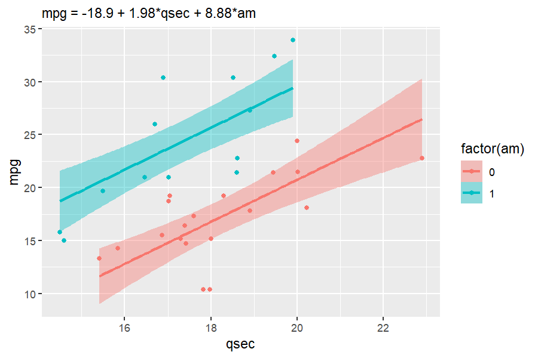
Both report helpful messages to the console about what decisions it made, and how you can control those decisions.
autoplot.lm — a complete plot in one call
See your model instantly and iterate easily to find the right model. autoplot() on an lm builds the whole plot: the model’s own data as a scatter, a fitted geom_slice() line with confidence ribbons, and a subtitle that communicates what the model is. To help with iteration, summary() is also printed to the console, showing P-values, R^2, and other statistics (override with summary = FALSE).
The result is a regular ggplot you can extend with mapping and + as usual.
autoplot(lm(Petal.Length ~ Sepal.Length + I(Sepal.Length^2):Species, iris))
#>
#> Call:
#> lm(formula = Petal.Length ~ Sepal.Length + I(Sepal.Length^2):Species,
#> data = iris)
#>
#> Residuals:
#> Min 1Q Median 3Q Max
#> -0.72665 -0.15039 0.00562 0.16639 0.76639
#>
#> Coefficients:
#> Estimate Std. Error t value Pr(>|t|)
#> (Intercept) -3.79412 1.09932 -3.451 0.000731 ***
#> Sepal.Length 2.04477 0.36389 5.619 9.51e-08 ***
#> I(Sepal.Length^2):Speciessetosa -0.19763 0.02958 -6.680 4.75e-10 ***
#> I(Sepal.Length^2):Speciesversicolor -0.11503 0.03033 -3.793 0.000218 ***
#> I(Sepal.Length^2):Speciesvirginica -0.09427 0.02987 -3.156 0.001944 **
#> ---
#> Signif. codes: 0 '***' 0.001 '**' 0.01 '*' 0.05 '.' 0.1 ' ' 1
#>
#> Residual standard error: 0.262 on 145 degrees of freedom
#> Multiple R-squared: 0.9786, Adjusted R-squared: 0.978
#> F-statistic: 1655 on 4 and 145 DF, p-value: < 2.2e-16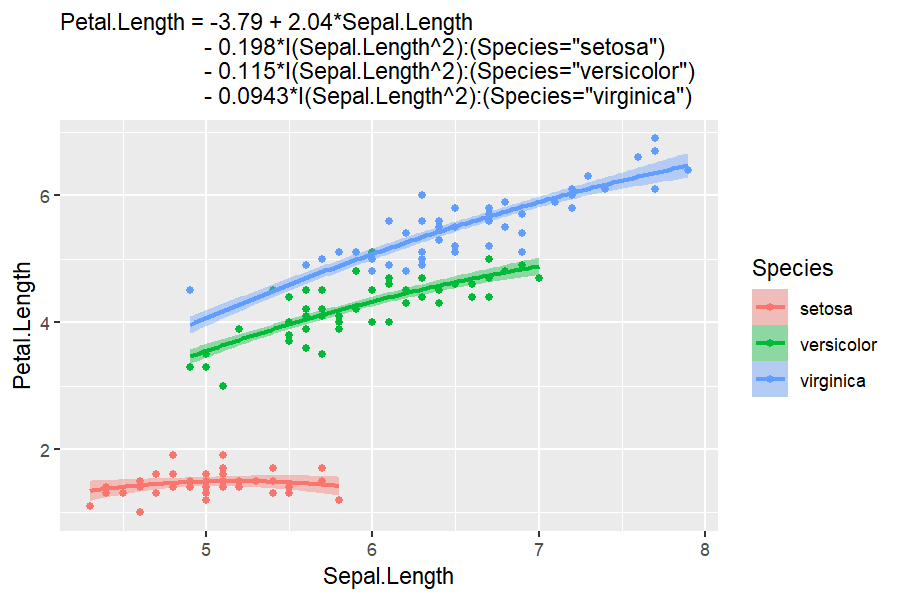
autoplot makes a few decisions for you, but lets you control them. The model’s first numeric predictor goes on the x-axis, and subsequent predictors group by color, then facet_wrap(), and linetype. Override or add to the automatic aes() by passing a mapping. Choose a different x-axis predictor with aes(x = ...), and pass other aesthetics such as color. Everything else in ... is passed on to geom_slice() or geom_slice_subtitle(). Pass interval = "prediction" for the wider ribbon, or interval = "none" for a bare line.
model <- lm(hwy ~ displ + drv + cyl, data = mpg)
# Change the defaults like a normal ggplot; it will still infer the rest
autoplot(model, aes(color = factor(cyl))) + facet_wrap(~drv)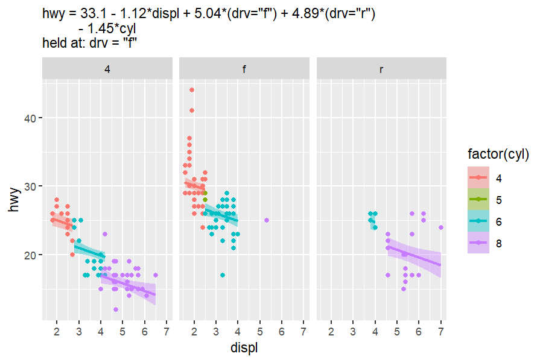
# Pass geom_slice() options through
autoplot(model,
aes(x = cyl, color = factor(drv)),
interval = "none") +
labs(title = "The Same Model From a Different Angle")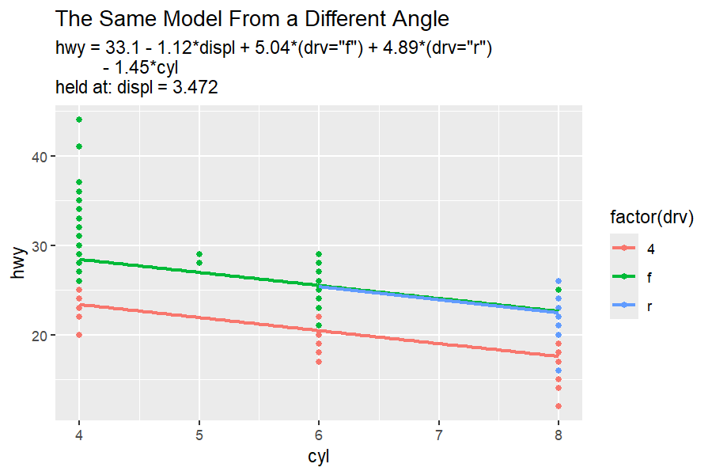
3d
autoplot.lm can also interactive 3d plotly plots using type = "3d". Additional arguments pass to scatter_3d.
# Two numeric predictors? Get the interactive 3-D surface instead
autoplot(lm(mpg ~ wt + I(wt^2) + hp, data = mtcars), type = "3d")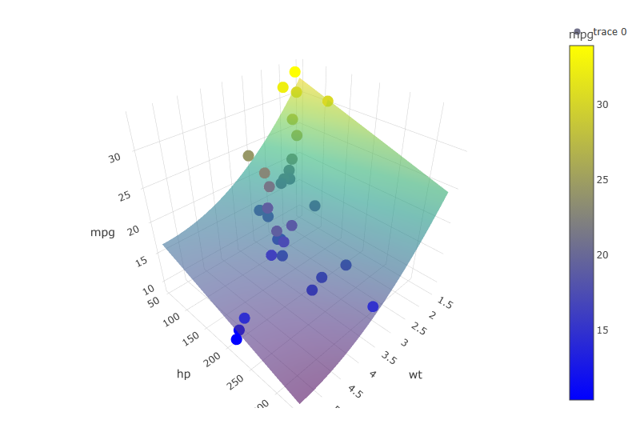
(static snapshot — the real plot is interactive: drag to rotate, hover for values)
geom_slice(): your model as a ggplot2 layer
geom_slice() draws the prediction line of a fitted lm() across your plot (and its facets). It looks like geom_smooth(), but where geom_smooth() fits its own model to the plotted data, geom_slice() draws the model you fitted. It is the main driver of autoplot.lm, but makes as few decisions as possible.
As you move beyond a single predictor, geom_slice() creates a 2d “slice” (or slices) of a high-dimensional model. Other predictors are held at constants, showing what slice of the model you are looking at. If you don’t specify those values, geom_slice() will make a guess as follows:
- Variables named in
predict_varsare held at your chosen values. - Variables mapped to a grouping aesthetic (
aes(color = g)) are held at each group’s value - one line per group. - Facet variables are held at each panel’s value.
- Anything left over is imputed (mean for numeric, most common value for factors), with a console message naming the value used.
In everything, console messages and labeling helpers try to make the model as clear as possible - so you know exactly what you are looking at.
In this example, the fitted model with 4 predictors can’t be plotted as a line without making multiple assumptions. The console messages clarify the decisions it HAD to make in order to plot the 2d slice.
set.seed(123)
n <- 80
x <- runif(n, 0.1, 10)
x2 <- runif(n, 0.1, 10)
x3 <- sample(c(1, 20, 40), n, replace = TRUE)
x4 <- sample(c(1, 2), n, replace = TRUE)
y <- log(5 + x + x2 + x3 + 1/5 * x * x3 + 80 * x4) # no random noise
dat <- data.frame(x, x2, x3, x4, y)
model <- lm(exp(y) ~ x*x3 + x2 + x4, data = dat) # exact model fit
# What geom_slice will do on its own (minimum inference)
ggplot(dat, aes(x, y)) +
geom_point() +
geom_slice(model) +
labs(title = "A Perfectly Fit Model 'Slice'")
#> Value for `x3` not specified - Used mean: 19.36
#> To choose a slice, use 'predict_vars = list(x3 = 19.36)'.
#> Value for `x2` not specified - Used mean: 4.981
#> To choose a slice, use 'predict_vars = list(x2 = 4.981)'.
#> Value for `x4` not specified - Used mean: 1.412
#> To choose a slice, use 'predict_vars = list(x4 = 1.412)'.
#> Predictions of `exp(y)` were back-transformed to match the `y` axis.
#> To turn this off, use 'back_transform = FALSE'.
# Shows the model is an exact fit (and geom_slice can plot axis transforms)
ggplot(dat, aes(x = log(5 + x + x2 + x3 + 1/5 * x * x3 + 80 * x4), y)) +
geom_point() +
geom_slice(model) +
labs(title = "Same Model, Different X-Axis")
#> Predictions of `exp(y)` were back-transformed to match the `y` axis.
#> To turn this off, use 'back_transform = FALSE'.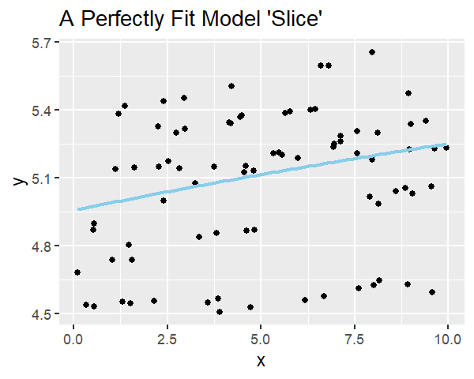
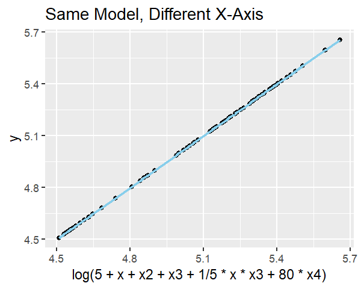
Those assumptions had to be made, but you can make better ones. This plot shows the same model far clearer by utilizing several features geom_slice() offers.
ggplot(dat, aes(x, y, color = factor(x3))) +
geom_point() +
geom_slice(model, band = "x2", predict_vars = list(x2 = c(0, 10))) +
facet_wrap(~x4) +
geom_slice_text() +
geom_slice_subtitle()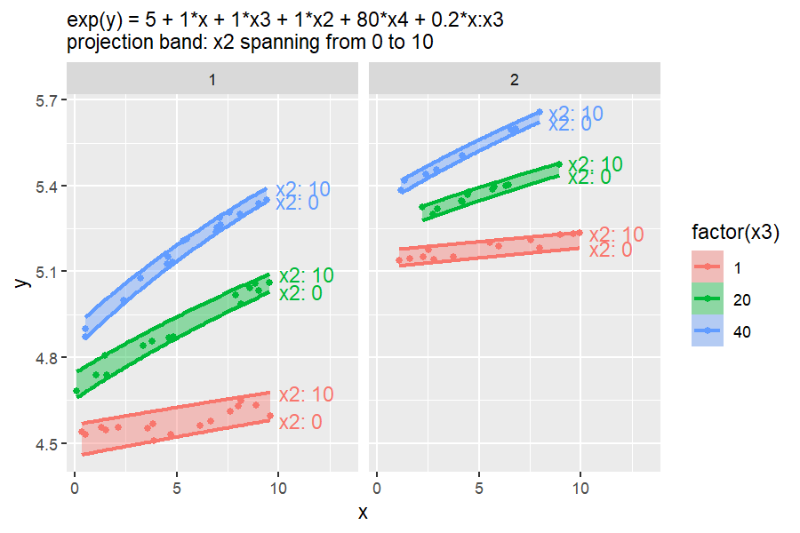
Choosing slices with predict_vars
Give a variable several values to draw one line per value; several multi-value variables are crossed:
model <- lm(Sepal.Length ~ Sepal.Width + Petal.Length, iris)
ggplot(iris, aes(Petal.Length, Sepal.Length)) +
geom_point() +
geom_slice(
model,
predict_vars = list(Sepal.Width = c(2, 3, 4)),
interval = "confidence"
) +
geom_slice_text()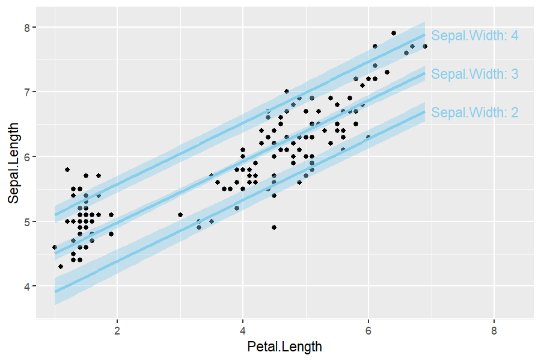
Confidence and prediction intervals
interval = "confidence" or "prediction" adds the corresponding predict.lm() ribbon around the line:
model <- lm(hwy ~ displ + I(displ^2) + displ, data = mpg)
ggplot(mpg, aes(displ, hwy)) +
geom_point() +
geom_slice(model, interval = "confidence") +
labs(title = "Confidence Interval")
ggplot(mpg, aes(displ, hwy)) +
geom_point() +
geom_slice(model, interval = "prediction") +
labs(title = "Prediction Interval")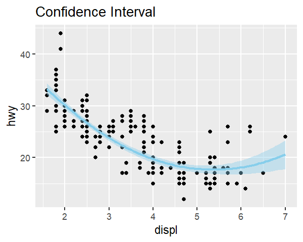
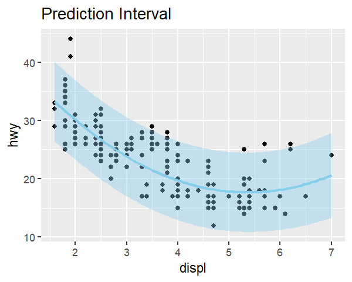
Projection bands
Where an interval shows uncertainty, band shows the reach of a predictor: two edge slices with a translucent ribbon between them. band = TRUE will make a decision about what the band should project over. band = "variable" spans that predictor between the values you gave in predict_vars, or its observed data range when predict_vars leaves it out:
model <- lm(hwy ~ displ * drv + cyl, data = mpg)
# Projection band infered using the min and max of an unused variable
# In this case: cyl from 4 to 8
ggplot(mpg, aes(displ, hwy, color = drv)) +
geom_point() +
geom_slice(model, band = TRUE) +
geom_slice_text()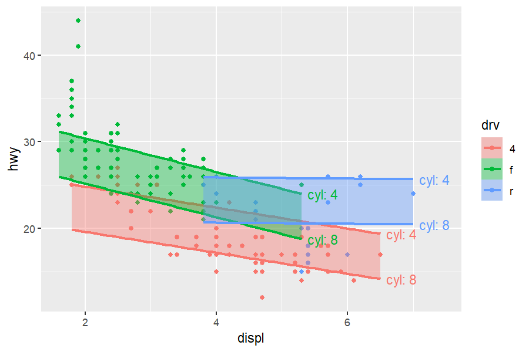
# This band is specified spanning cyl from 5 to 7
ggplot(mpg, aes(displ, hwy, color = drv)) +
geom_point() +
geom_slice(model, band = "cyl", predict_vars = list(cyl = c(5, 7))) +
geom_slice_text()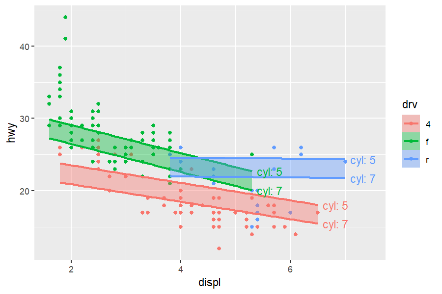
band = TRUE infers the variable when there is only one sensible choice (the one multi-value predict_vars entry, or the single predictor the plot does not otherwise show). band cannot be combined with interval.
Transformed responses
If the model’s response is transformed (e.g. lm(log(y) ~ x)) but the plot shows raw y, predictions are back-transformed automatically to match the y-axis (a message says so). Use back_transform = FALSE to turn this off, or pass a function/name (exp, "log10", …) to override the auto-detection.
model <- lm(log(mpg) ~ disp + hp, data = mtcars)
ggplot(mtcars, aes(disp, mpg)) +
geom_point() +
geom_slice(model) + # back-transformed onto the raw mpg axis
labs(title = "normal y axis")
ggplot(mtcars, aes(disp, log(mpg))) +
geom_point() +
geom_slice(model) + # back-transformation adapts to axis
labs(title = "log() y axis")
ggplot(mtcars, aes(disp, mpg)) +
geom_point() +
geom_slice(model) +
scale_y_log10() + # resilient to other ggplot axis changes
labs(title = "scale_y_log10() axis")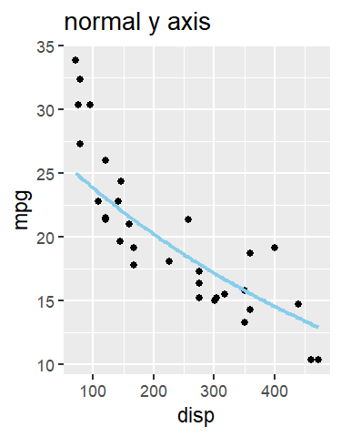
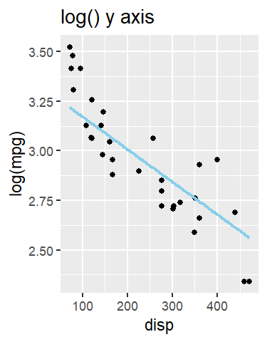
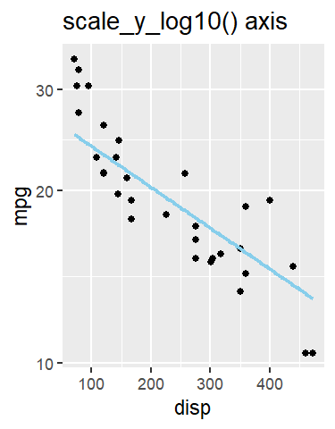
Grouping: one line per group
Each group’s line normally stops at its own data range. full_range = TRUE extends every line to the edge of the panel instead (like fullrange in geom_smooth()):
model <- lm(hwy ~ displ + I(displ^2) + displ:drv, data = mpg)
# One slice per drv group, capped at the end of each group
ggplot(mpg, aes(displ, hwy, color = drv)) +
geom_point() +
geom_slice(model)
# Slice lines extended across the full panel x range with full_range = TRUE
ggplot(mpg, aes(displ, hwy, color = drv)) +
geom_point() +
geom_slice(model, full_range = TRUE)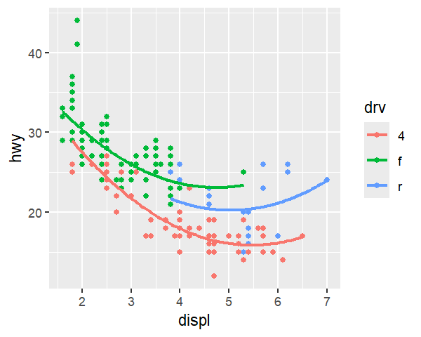
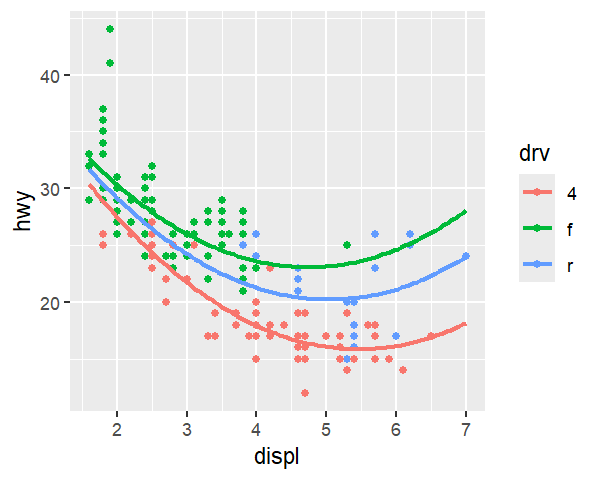
Labeling the slices
Three companions describe geom_slice() lines on the plot itself. They take no model or predict_vars — everything is borrowed from the plot’s existing geom_slice() layers, so add them after those layers.
geom_slice_text()
Writes a label at the end of each slice line; especially useful when band or multiple predict_vars are specified.
model <- lm(Sepal.Length ~ Sepal.Width + Petal.Length, iris)
ggplot(iris, aes(Petal.Length, Sepal.Length)) +
geom_point() +
geom_slice(model, band = TRUE) +
geom_slice_text()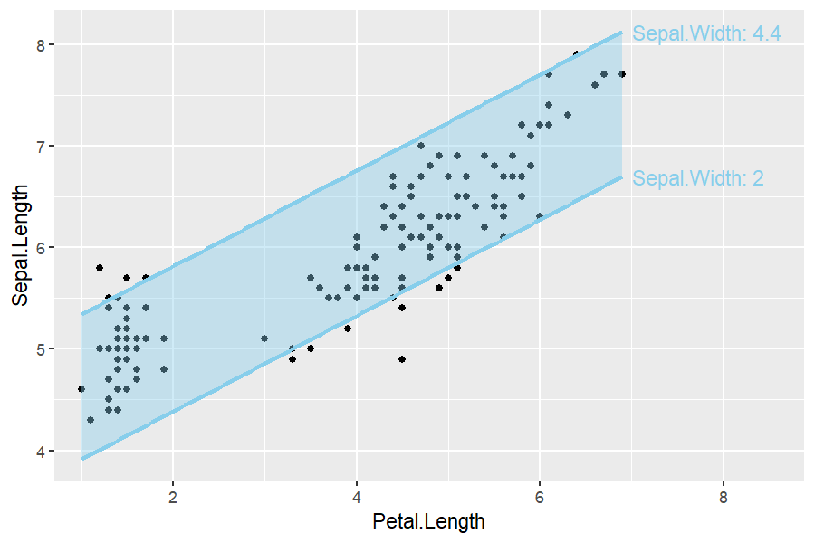
set.seed(123)
n <- 80
x <- runif(n, -10, 10)
x2 <- runif(n, 0, 4)
g <- factor(sample(c("A", "B"), n, replace = TRUE))
y <- x * ifelse(g == "A", 0.5, 2) + ifelse(g == "A", 5, -5) + 4 * x2 + rnorm(n)
dat <- data.frame(x, g, y)
model <- lm(y ~ x * g + x2, data = dat)
# labels auto-color
ggplot(dat, aes(x, y, color = g)) +
geom_point(alpha = 0.5) +
geom_slice(model, predict_vars = list(x2 = c(0, 2, 4))) +
geom_slice_text()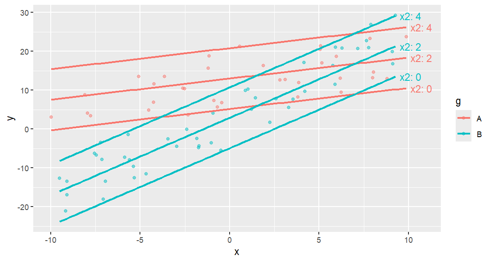
# Multiple predictors represent one line
ggplot(dat, aes(x, y)) +
geom_point(alpha = 0.5) +
geom_slice(model, predict_vars = list(x2 = c(0, 2, 4), g = c("A", "B"))) +
geom_slice_text()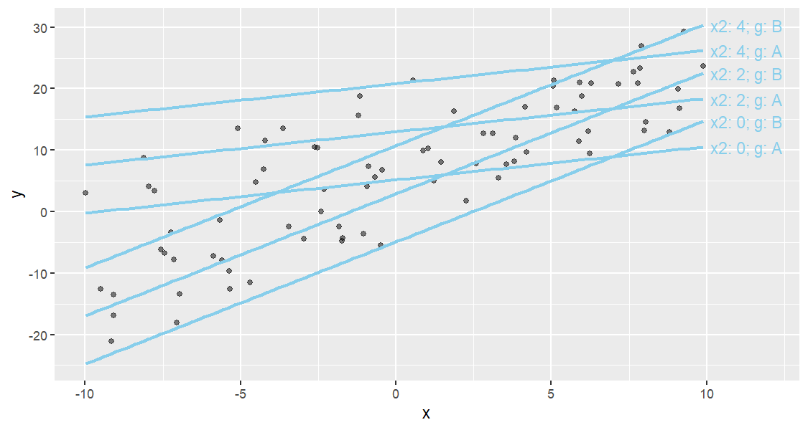
# Identical, with `style = "legend"`
ggplot(dat, aes(x, y)) +
geom_point(alpha = 0.5) +
geom_slice(model, predict_vars = list(x2 = c(0, 2, 4), g = c("A", "B"))) +
geom_slice_text(style = "legend")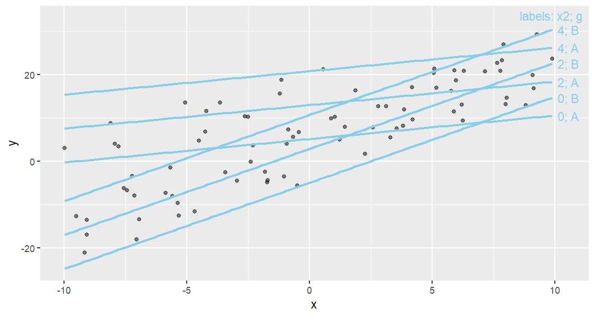
Options: style ("variable" writes "hp: 66", "value" writes bare values, "legend" adds a corner key), location = "left"/"right", offset, and color.
geom_slice_subtitle() and geom_slice_caption()
Fill the plot subtitle (or caption) with the model equation and the held values the plot does not otherwise show — values already labeled by the legend, facets, or geom_slice_text() are skipped:
model <- lm(Petal.Length ~ Sepal.Length + I(Sepal.Length^2):Species + Sepal.Width, iris)
ggplot(iris, aes(Sepal.Length, Petal.Length, color = Species)) +
geom_point() +
geom_slice(model, interval = "confidence") +
geom_slice_subtitle() # or geom_slice_caption()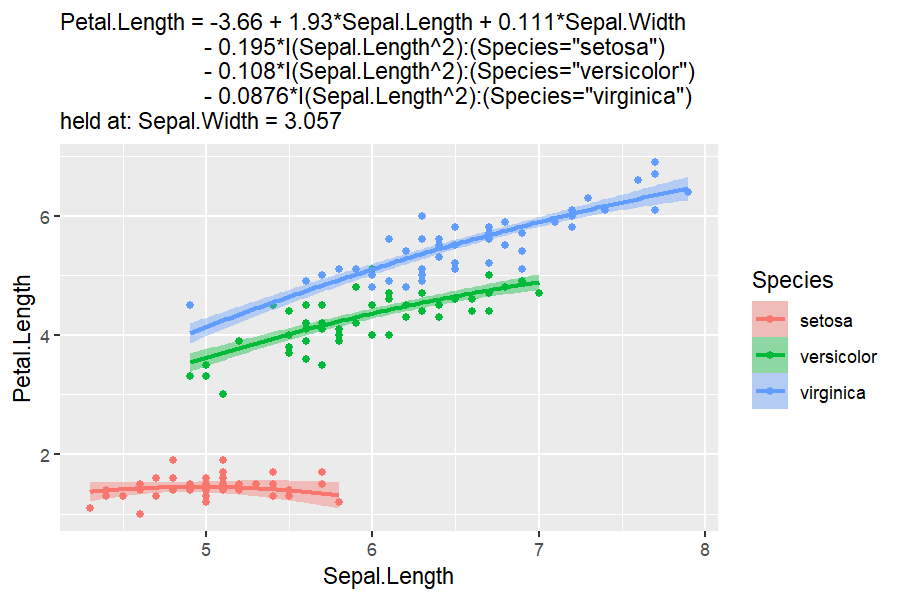
geom_slice_subtitle() will go to great lengths to keep the model readable. It adds indents where there is room, and compresses where space is tight. style changes based on how much space is available.
Both take model = FALSE (drop the equation line) and prepend/append strings to give you more control. Pass-through arguments are sent to lm_equation(), including style.
Base R plotting
slice_2d()
Create a new base-R plot showing a 2-D slice of a linear model. Unspecified x_axis defaults to the first variable in the model; unspecified predictor values are held at sensible defaults (numeric → mean, factor → first level) and reported in the caption.
model <- lm(log(mpg) ~ disp + hp, data = mtcars)
slice_2d(model)
#--or--
slice_2d(model, x_axis = "hp", disp = 250, n = 150, col = "blue", lwd = 2)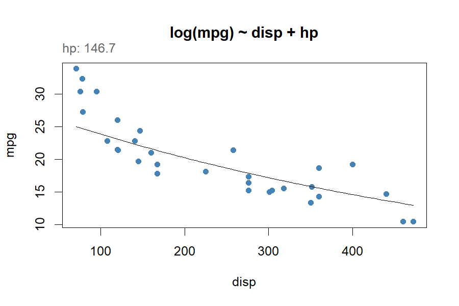
add_slice_2d()
Add a 2-D slice line to an existing base-R plot. X and Y axis variables must match the plot it is being added to.
model <- lm(log(mpg) ~ disp + hp, data = mtcars)
plot(mpg ~ disp, data = mtcars)
add_slice_2d(model)
# Multiple slices on one plot
plot(mpg ~ disp, data = mtcars)
add_slice_2d(model, hp = min(mtcars$hp), col = "blue")
add_slice_2d(model, hp = max(mtcars$hp), col = "red", lty = 2)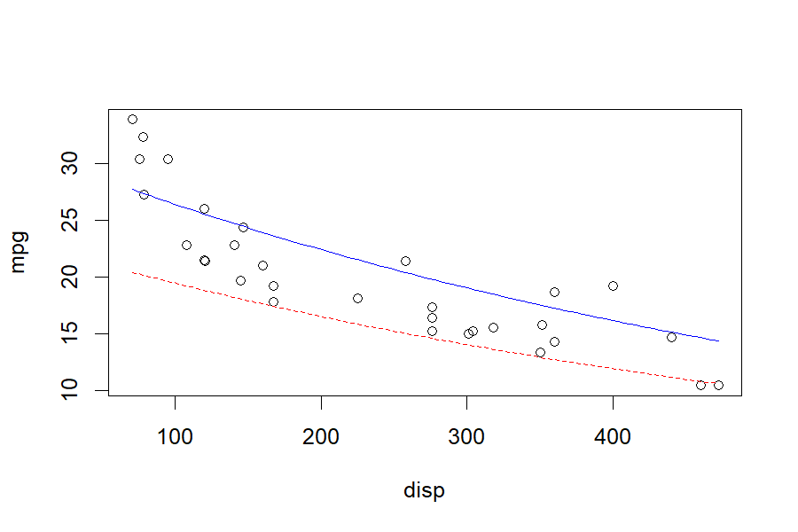
More tools
scatter_3d()
Create an interactive 3-D scatter plot with a fitted regression surface (models must have exactly two numeric predictors). Points are colored by the response along the colors gradient, and transformed terms such as I(x^2) graph over their raw predictors. It is also reachable as autoplot(model, type = "3d").
model <- lm(mpg ~ wt + I(wt^2) + hp, data = mtcars)
scatter_3d(model)
(static snapshot — the real plot is interactive: drag to rotate, hover for values)
lm_equation() and lm_latex()
Return the fitted model’s equation as plain text, or print it LaTeX-formatted (ideal for LaTeX or R Markdown documents). Factor terms are spelled out readably by default (style = "prettier", e.g. (Species="setosa")); style = "brackets" shortens these to the level alone ([setosa]), and style = "raw" keeps the design-matrix names (Speciessetosa).
model <- lm(mpg ~ disp + hp, data = mtcars)
lm_equation(model)
#> [1] "mpg = 30.7 - 0.0303*disp - 0.0248*hp"
lm_latex(model)
#> $$\underbrace{\hat{Y_i}}_{\text{Pred. mpg}} = 30.7 - 0.0303\underbrace{X_{1i}}_{\text{disp}} - 0.0248\underbrace{X_{2i}}_{\text{hp}}$$
diagnose()
Draw three base-R diagnostic plots for a model in one call: Residuals vs Fitted, Normal Q-Q, and the residuals in order.
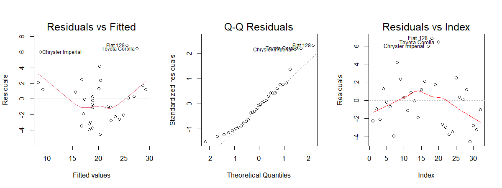
Advanced: StatSlice and GeomSlice
Low-level ggproto objects that power geom_slice(). Most users never need to call these directly, but you can for custom layers. Note that StatSlice reads the aesthetic mapping from its params — geom_slice() supplies it automatically, but a raw layer() call must pass it explicitly:
library(ggplot2)
model <- lm(mpg ~ disp + hp + cyl, data = mtcars)
ggplot(mtcars, aes(disp, mpg)) +
geom_point() +
layer(stat = StatSlice,
geom = GeomSlice,
position = "identity",
inherit.aes = TRUE,
params = list(model = model, predict_vars = list(hp = 110),
mapping = aes(disp, mpg)))Tips
• For multi-variable models, use predict_vars (e.g. list(hp = 110)) to choose the slice you want.
• Factors included in facet_wrap() or facet_grid() should also appear in the model you pass to geom_slice().
• New to R modeling? lm(y ~ x1 + x2, data = df) fits a linear model of y on x1 and x2.
Getting help
• Use R’s built-in help: ?geom_slice, ?autoplot.lm, ?slice_2d, ?scatter_3d, etc.
• Found a bug or have a suggestion? Open an issue at https://github.com/saundersg/Applr/issues.
Enjoy clearer model visualizations with Applr!
Attributions
Thanks to Cameron McClellan for his vision and initiation, James Beeson for seeing it through, Anthropic’s Claude for solving the problems we couldn’t, and Brother Saunders - our teacher and inspiration to do great things.
And of course, Brigham Young University Idaho - our alma mater; the school we love and cherish. And the God of Heaven and Earth, who gives us all.
33 For God is not the author of confusion, but of peace, as in all churches of the saints. - 1 Corinthians 14:33